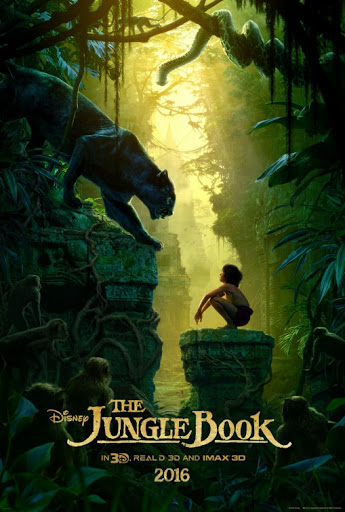

Writed by Rudyard Kipling,Publisher Macmillan
In this classic Walt Disney animation based on Rudyard Kipling's book, Mowgli, an abandoned child raised by wolves, has his peaceful existence threatened by the return of the man-eating tiger Shere Khan (George Sanders). Facing certain death, Mowgli must overcome his reluctance to leave his wolf family and return to the "man village." But he is not alone on his quest: Aided by Bagheera the panther, and later by the carefree bear Balloo (Phil Harris), he braves the jungle's many perils.